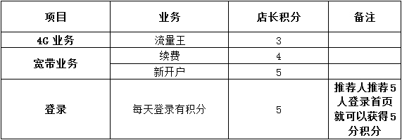

又到月结，呜呼哀哉，余额不足，一不小心就被停机，赠送话费也救不了你！等着求救不如自救！只要在揭阳移动4G微店开店为他人办理业务，就可获得移动金币奖励，金币可以兑换话费、流量，帮人帮自己，从此月结不再痛！
1.操作说明
（1）点击“请输入被推荐人手机号码”输入号码，即可查询到用户的相关信息和推荐套餐。
（2）点击“我要做店长”即可为客户办理4G业务、上网业务、通话业务、宽带业务。
（3）为客户办理相关业务后须经客户确认，确认方式有短信验证和扫描二维码确认。
（4）点击“我的销量”可以查询店长的销售情况，还可以设置具体时间进行精确统计。
2.金币奖励标准

备注：办理表格以外的业务不奖励金币
3.店长须知
（1）本活动仅限揭阳移动客户参加。
（2）动感地带、神州行老客户当月办理流量王，同一手机号码，只能获得一次金币奖励，所奖励金币数量以第一次所办套餐为标准。
（3）店长所获得的金币可以兑换话费、流量。话费兑换标准为1个金币=1元话费，可兑换30元、50元、100元话费；金币兑换流量的比例按照与所兑换流量档次等同的流量叠加包价格计算，流量兑换档次为300M/500M/1000M。兑换后系统金币同步减少。
（4）金币兑换流量采取先赠费，再帮客户办理对应流量叠加包的形式。如兑换300M流量，先赠送20元话费，再帮客户办理20元300M流量叠加包。
（5）店主每月兑换话费不得超过500元，兑换流量不得超过2G。
（6）被代理人经店主推荐后成功办理业务，金币奖励归店主所有。
（7）宽带业务的金币奖励到账时间以系统成功归档的时间为准，其他业务则为实时到账。
（8） 公务机、测试号所办理业务不计入可奖励的业务范围。
（9）请保持手机状态正常，兑换流量或话费时如遇到号码状态异常出现无法兑换状况，视为放弃兑换。